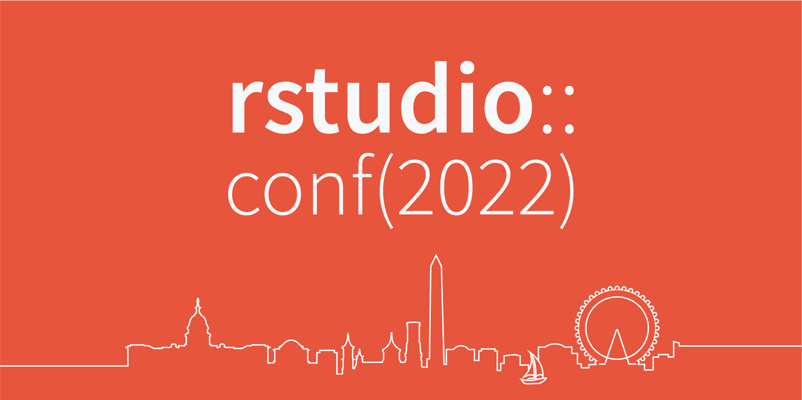

rstudio::conf(2022) will feature a variety of workshops and talks on Quarto. Join us in Washington DC this July 25-28 to learn more about Quarto and hear from folks using Quarto to create, share, and collaborate.

Here is a list of Quarto-related talks and workshops (and scroll down for details on each):
- Keynote: Reimagine + Collaborate + Share with Quarto
- Workshops:
- Talks:
Keynote
Reimagine + Collaborate + Share with Quarto (Keynote): (Talk recording)
- Presented by Julia Stewart Lowndes (Director, Openscapes) and Mine Çetinkaya-Rundel (Developer Educator at RStudio and Professor at Duke University).
- Thursday July 28, 9:00am - 10:00am EDT.
- What is Quarto? In this talk, in four acts, we will discuss how Quarto unifies and extends the R Markdown ecosystem. Through our work with NASA Openscapes, Duke University, and RStudio, we will share our experiences authoring, teaching, and collaborating with Quarto. Full of demos with Quarto in RStudio and Jupyter and weaving together narrative, R, and Python code, we will showcase features of Quarto that have enabled us to reimagine our reproducible workflows. This talk will help you get the most out of Quarto regardless of your background with R Markdown, the computing language(s) you use, and your tool of choice for authoring.
Workshops
We will have two Quarto workshops at the conference, held on July 25-26, one for those who have no or little prior experience with R Markdown and the other for those who want to take their R Markdown skills and expertise and apply them in Quarto.
Getting Started with Quarto: This workshop is designed for those who have no or little prior experience with R Markdown. In this 2 day workshop you will learn about the Quarto format for technical communication and computation. The workshop will teach you how to get started creating and fully customizing Quarto outputs (HTML, PDF, Presentations) and the use of RStudio’s Visual Editor which provides a user interface for editing all of Pandoc markdown. The workshop will also provide an overview of Quarto’s developer tooling support in alternative tools such as Jupyter, VS Code, and any text editors. The workshop will briefly cover how to add interactivity to Quarto with Shiny, Observable JS, htmlwidgets or Jupyter Widgets. Lastly, the workshop will cover Quarto Projects for aggregating many files such as complex web sites or entire books. Presented by Tom Mock, Customer Enablement Lead at RStudio, this workshop will be appropriate for attendees who answer yes to these questions:
- Have you programmed in R and want to better encapsulate your code, documentation, and outputs in a cohesive “data product”?
- Do you want to learn about the next generation of RMarkdown for data science?
- Do you want to have a better interactive experience when writing technical or scientific documents with literate programming?
Find out more about this workshop and register at https://www.rstudio.com/conference/2022/workshops/get-started-quarto/.
From R Markdown to Quarto: This workshop is designed for those who want to take their R Markdown skills and expertise and apply them in Quarto. In this workshop you will learn how to apply your reproducible authoring skills to the Quarto format and learn about new tools and workflows for authoring with Quarto in RStudio. You will learn to create static documents, to add interactivity to them with Shiny and htmlwidgets, and to create presentations in various formats such as reveal.js, beamer, and pptx. The workshop will also introduce you to Quarto projects which you can use to build websites and write blogs and books. Finally, you will learn various ways to deploy and publish your Quarto projects on the web. Independent modules will also highlight authoring in Quarto with Jupyter and VS Code as well as other text editors. Presented by Andrew Bray, Associate Teaching Professor in the Department of Statistics at UC Berkeley, this workshop will be appropriate for you if you answer yes to any of these questions:
- Have you authored R Markdown documents and are you interested in migrating your workflow to its successor format, Quarto?
- Are you interested in exploring the wide spectrum of documents that can be produced with Quarto, including static documents, websites, and slides?
Find out more about this workshop and register at https://www.rstudio.com/conference/2022/workshops/rmd-to-quarto.
Talks
- Quarto for R Markdown users: (Talk recording)
- Presented by Tom Mock, Customer Enablement Lead at RStudio.
- Wednesday July 27, 3:20pm - 3:40pm EDT.
- Are you curious about Quarto? Maybe you saw it on Twitter or the RStudio::conf agenda. Perhaps this raised questions like: What exactly is Quarto? What about RMarkdown? (don’t worry it’s not going away!) What features does Quarto add? What should I do with my existing Rmd/ipynb files? This talk will answer all of those questions and more! I’ll present Quarto as a next-gen version of RMarkdown, compare the similarities, and then discuss the new features in Quarto for publishing documents, presentations, blog posts, lab notebooks and more! Lastly, I’ll cover what this means for our customers using RStudio Team, and the exciting new world for Python users.
- These are a few of my favorite things (about Quarto presentations): (Talk recording)
- Presented by Tracy Teal, Open Source Program Director at RStudio.
- Thursday July 28, 2022 3:20pm - 3:40pm EDT.
- Quarto is the next generation of RMarkdown, and comes with a new presentation format, revealjs. In this talk, I’ll show a few of my favorite things about making interactive HTML presentations with Quarto. Along the way you’ll learn about the visual editor, multiple columns, delivering an effective talk with speaker notes and mode, making your presentations pop with transitions, effective ways to incorporate code into your presentation, beautiful themes (and how to match your corporate style guide), and sharing it as pdf and HTML. I’ll finish off with a brief look at generating a PowerPoint presentation from a template.
- Literate Programming With Jupyter Notebooks and Quarto: (Talk recording)
- Presented by Hamel Husain, head of Data Science at Outerbounds (the developers of Metaflow) and core developer at fast.ai.
- Thursday July 28, 3:40pm - 4:00pm EDT.
- Jupyter Notebooks play a critical role in in the workflow of many users. Notebooks are used to document existing code, to quickly prototype and iterate on ideas, and as a medium of technical communication. However, package developers typically use an entirely separate set of more traditional development tools, and the context switching between these tools and notebooks can be frustrating. Not only do you lose the ability to iterate fast, but you lose the ability to document and test your code in-situ, requiring you to create documentation and tests separately from source code. Nbdev is a literate programming framework that allows you to develop Python libraries within Jupyter Notebooks. This talk will describe the integration between Nbdev and Quarto, which enables library developers to author their documentation right alongside their code, and automatically produce a Quarto website for their package. The result is a seamless workflow for developing, documenting, and testing software packages all within Jupyter Notebooks, with no context-switching required.
- Websites & Books & Blogs, oh my! Creating Rich Content with Quarto: (Talk recording)
- Presented by Devin Pastoor, Solutions Engineer at RStudio.
- Thursday July 28, 4:00pm - 4:20pm EDT.
- A number of packages have emerged in the R ecosystem to help create websites (hugodown), books (bookdown), and blogs (blogdown). In this talk, I’ll show you how Quarto handles creating these types of content and more. Whether you’re a grad student considering your first blog post about R, or a python expert about to write a technical book, I’ll show you how Quarto enables you to focus on content while it takes care of the rest. In addition, I’ll show the RStudio team is making it as easy as possible to publish and share content within your organization and to the whole community.
To find out more about the conference and register, visit rstd.io/conf. Looking forward to seeing you in DC!
Can’t make it to the conference in person, but don’t want to miss this content? You can follow along with the talks remotely via the live stream and we will share materials from the workshops in a post-conf roundup post.